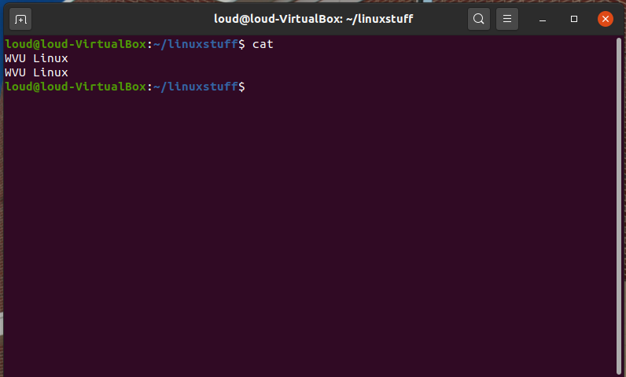
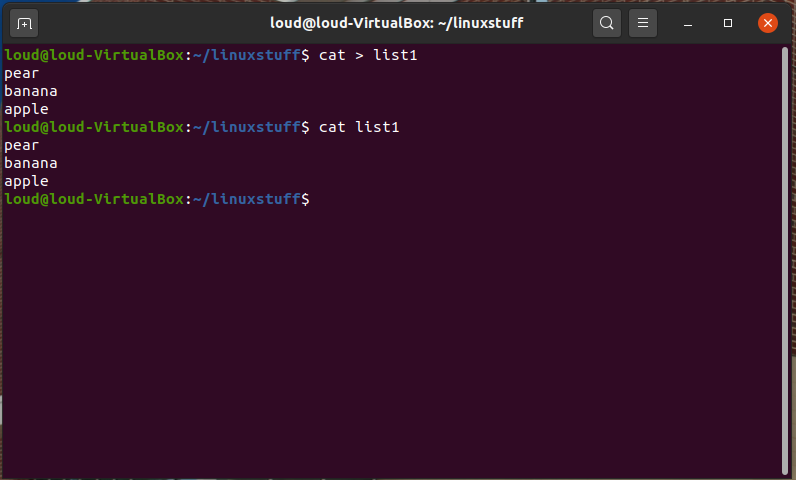
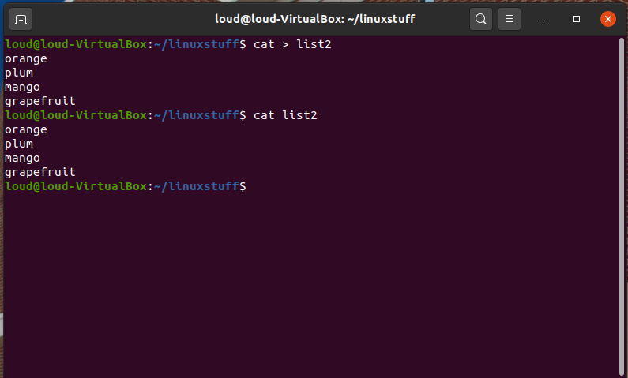
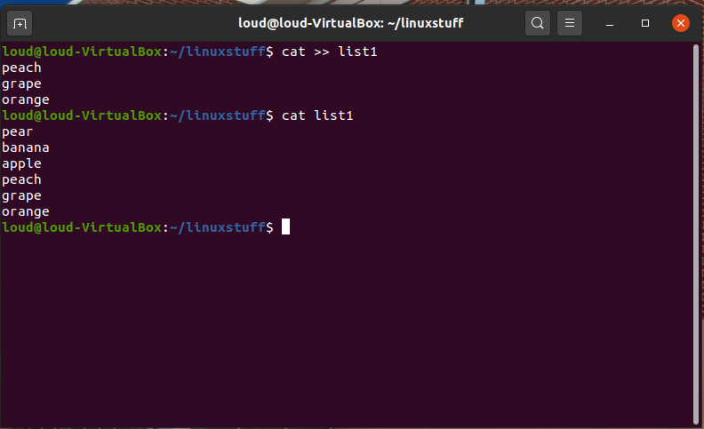
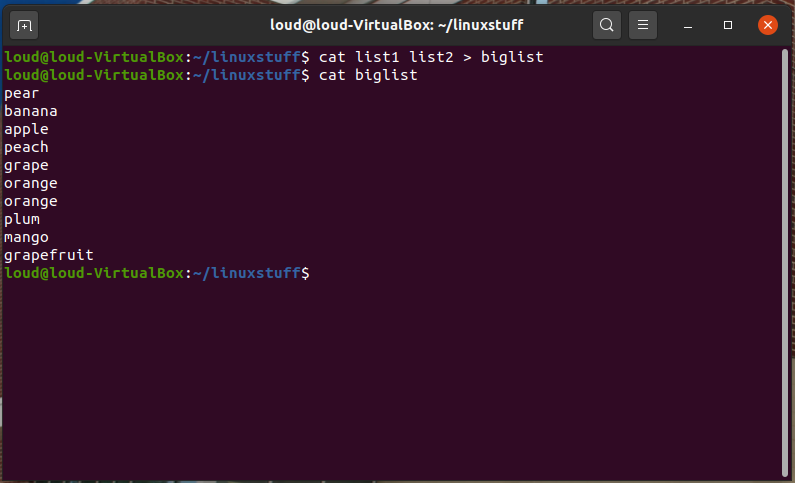
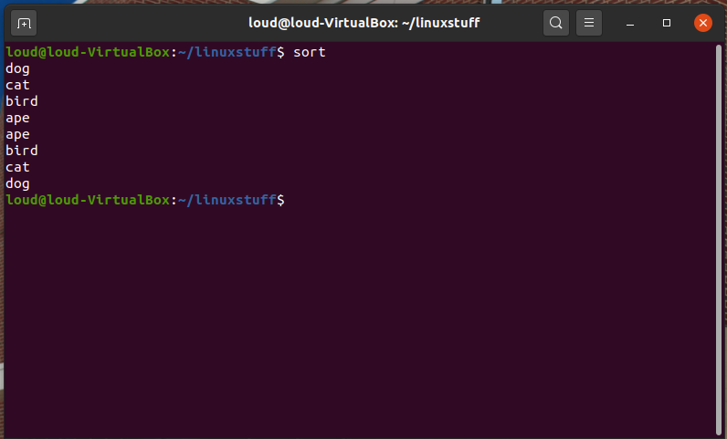
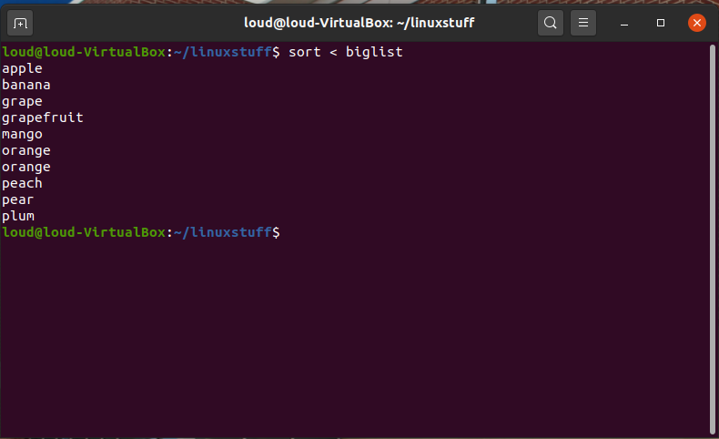
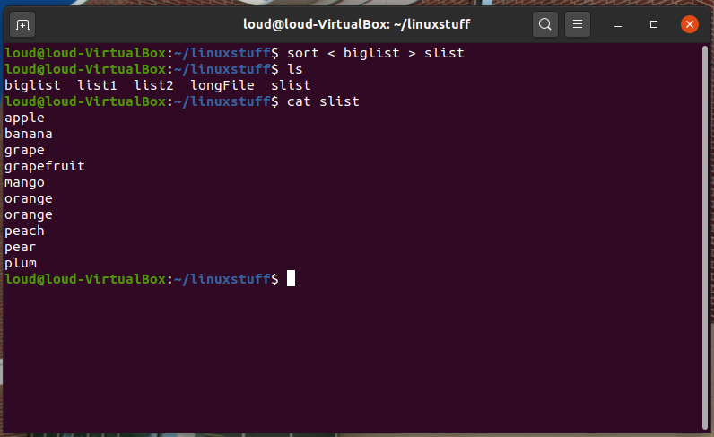
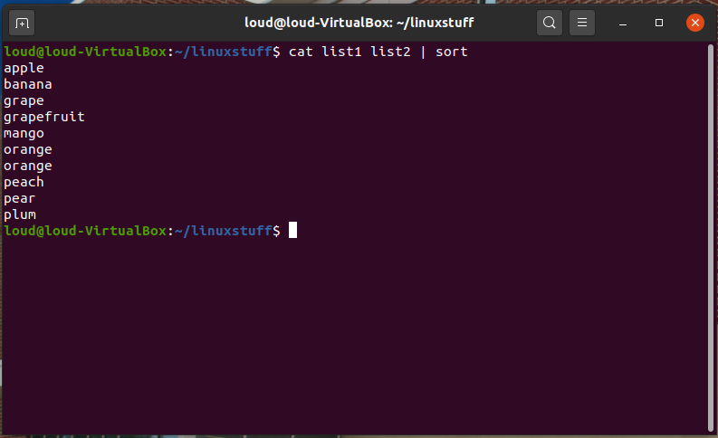
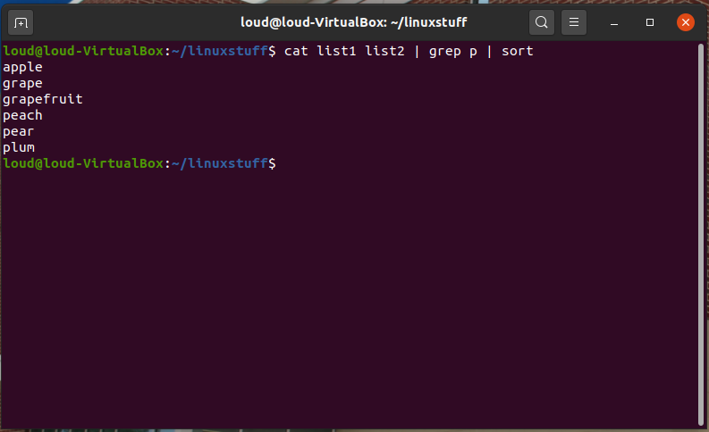

Most processes initiated by Linux commands write to the standard output (that is, they write to the terminal screen), and many take their input from the standard input (that is, they read it from the keyboard). There is also the standard error, where processes write their error messages, by default, to the terminal screen.
We have already seen one use of the cat command to write the contents of a file to the screen.
Now type cat without specifing a file to read
$ cat
Then type a few words on the keyboard and press the [Return] key.
Finally hold the [Ctrl] key down and press [d] (written as ^D for short) to end the input.

What has happened?
If you run the cat command without specifing a file to read, it reads the standard input (the keyboard), and on receiving the 'end of file' (^D), copies it to the standard output (the screen).
In Linux, we can redirect both the input and the output of commands.
We use the > symbol to redirect the output of a command. For example, to create a file called list1 containing a list of fruit, type
$ cat > list1
Then type in the names of some fruit. Press [Return] after each one.
pear
banana
apple
^D {this means press [Ctrl] and [d] to stop}
What happens is the cat command reads the standard input (the keyboard) and the > redirects the output, which normally goes to the screen, into a file called list1
To read the contents of the file, type
$ cat list1

Using the above method, create another file called list2 containing the following fruit: orange, plum, mango, grapefruit. Read the contents of list2

The form >> appends standard output to a file. So to add more items to the file list1, type
$ cat >> list1
Then type in the names of more fruit
peach
grape
orange
^D (Control D to stop)
To read the contents of the file, type
$ cat list1

You should now have two files. One contains six fruit, the other contains four fruit.
We will now use the cat command to join (concatenate) list1 and list2 into a new file called biglist. Type
$ cat list1 list2 > biglist
What this is doing is reading the contents of list1 and list2 in turn, then outputing the text to the file biglist
To read the contents of the new file, type
$ cat biglist

We use the < symbol to redirect the input of a command.
The command sort alphabetically or numerically sorts a list. Type
$ sort
Then type in the names of some animals. Press [Return] after each one.
dog
cat
bird
ape
^D (control d to stop)
The output will be
ape
bird
cat
dog

Using < you can redirect the input to come from a file rather than the keyboard. For example, to sort the list of fruit, type
$ sort < biglist
and the sorted list will be output to the screen.

To output the sorted list to a file, type,
$ sort < biglist > slist
Use cat to read the contents of the file slist

Previously we created a new file called bigfile which included the outputs of list1 and list2.
We then sorted this bigfile and viewed its output.
What if we could accomplish all of that with a single command? In the terminal, try typing:
$ cat list1 list2 | sort

The | symbol is a pipe, which can be used to link the output of the command before the pipe to the input for the command after the pipe.
In this specific situation, the output of the first command is the data stored within both list1 and list2, and this output is used as the input for the sort command.
Notice how we accomplished the same task as before, but without needing to create bigfile, which could be a waste of time/space particularly if the files were all much longer.
The pipe is a powerful tool that can save time performing several different operations! You are encouraged to experiment with the tool on your own to really learn how to use it effectively.
Using pipes, display all lines of list1 and list2 containing the letter 'p', and sort the result.

| Command | Meaning |
|---|---|
| command > file | redirect standard output to a file |
| command >> file | append standard output to a file |
| command < file | redirect standard input from a file |
| command1 | command2 | pipe the output of command1 to the input of command2 |
| cat file1 file2 > file0 | concatenate file1 and file2 to file0 |
| sort | sort data |
Modified from original site made by M.Stonebank@surrey.ac.uk, © 9th October 2000